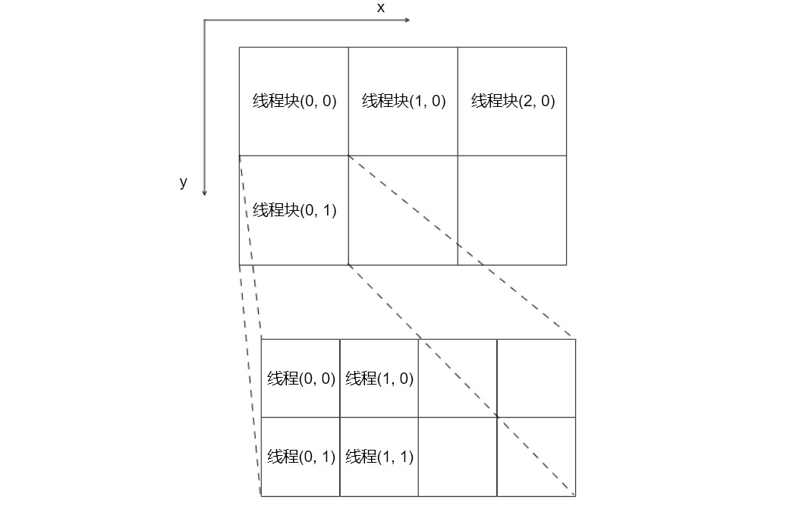

§概述
CUDA全称统一计算架构(Compute Unified Device Architecture)，是NVIDIA公司于2006年推出的一种利用GPU(General Purpose Graphics Processing Unit)进行计算的架构。GPU和CPU在设计思路上有很大的不同，CPU使用多发射乱序执行和转移猜测等手段提高串行执行指令的能力，而GPU通过使用大量的计算单元来提供更高的并行性能。它们的架构对比大致可用下图描述：

GPU的一个计算单元和CPU比起来性能差很多，也没有乱序执行和转移猜测等加速手段，但通过精心设计并行算法，使GPU的数以千计的计算单元协同完成任务，就可以在GPU上得到很好的性能。
GPU不是一个独立的计算平台，无法代替CPU的工作，必须和CPU协同，也就是我们常说的异构计算。一般来讲，GPU通过PCIe总线与CPU和内存等硬件连接，CPU及其周边硬件称为主机端(host)，而GPU称为设备端(device)。一般由CPU负责复杂的逻辑控制，GPU负责密集的计算任务，从而发挥最大的效果。
CUDA支持c/c++和fortran语言，此教程仅介绍在c++语言中的用法。
§安装
在安装cuda之前，首先要先检查自己的硬件和软件环境。
首先，虚拟机的环境不是真实的环境，想要访问显卡必须进行显卡穿透，目前解决方案很少(例如VMware ESXi)，而且非常麻烦，此处不讨论。
支持CUDA的GPU可以在NVIDIA的网站(https://developer.nvidia.com/cuda-gpus)上找到，需要注意，目前只有NVIDIA的GPU可以支持CUDA，AMD的GPU暂时没有看到支持的计划，这是因为CUDA不仅是程序设计的架构，也影响着GPU的硬件架构，以及显卡驱动的制作，是一个横跨GPU硬件底层到软件的大架构。
常见的NVIDIA显卡一般有Tesla、Quadro和GeForce系列。Tesla目前已经更名，直接以NVIDIA冠名，如NVIDIA A100，用于超级计算一类的计算服务器。Quadro一般用于个从工作站。GeForce和TITAN系列用于游戏主机，性价比最高，有许多计算服务器和工作站也会选择这个系列。以GeForce为例，从4代GT 430到最新的RTX 2080ti都支持CUDA。
CUDA的版本和显卡驱动的版本是对应的，一般要求显卡驱动的版本要高于CUDA的要求，一些常见CUDA版本对驱动要求如下表所示：
| CUDA Toolkit | Linux x86_64 Driver Version | Windows x86_64 Driver Version |
|---|---|---|
| CUDA 11.0.3 Update 1 | >= 450.51.06 | >= 451.82 |
| CUDA 11.0.2 GA | >= 450.51.05 | >= 451.48 |
| CUDA 11.0.1 RC | >= 450.36.06 | >= 451.22 |
| CUDA 10.2.89 | >= 440.33 | >= 441.22 |
| CUDA 10.1 (10.1.105 general release, and updates) | >= 418.39 | >= 418.96 |
| CUDA 10.0.130 | >= 410.48 | >= 411.31 |
| CUDA 9.2 (9.2.148 Update 1) | >= 396.37 | >= 398.26 |
| CUDA 9.2 (9.2.88) | >= 396.26 | >= 397.44 |
| CUDA 9.1 (9.1.85) | >= 390.46 | >= 391.29 |
| CUDA 9.0 (9.0.76) | >= 384.81 | >= 385.54 |
| CUDA 8.0 (8.0.61 GA2) | >= 375.26 | >= 376.51 |
| CUDA 8.0 (8.0.44) | >= 367.48 | >= 369.30 |
| CUDA 7.5 (7.5.16) | >= 352.31 | >= 353.66 |
| CUDA 7.0 (7.0.28) | >= 346.46 | >= 347.62 |
CUDA的安装包内一般会包含显卡驱动，但不推荐直接使用，安装CUDA时尽量将这个选项去掉。推荐的做法是先去网站https://www.nvidia.com/drivers查看自己的显卡所能支持驱动版本，然后再选择CUDA的版本。
CUDA的安装包可以去网站https://developer.nvidia.com/cuda-downloads下载，旧版本点页面上的"Legacy Releases"按钮或者打开网址https://developer.nvidia.com/cuda-toolkit-archive即可进入下载页面。下载页面上有各个版本的Release Notes和Documentation，这是比较重要的资料，安装前需要仔细查看其中的一些要求。
在各个版本的Documentation中的Installation Guide中可以找到对操作系统和编译器的要求，比如CUDA 10.2对操作系统的要求为：
| Operating System | Native x86_64 | Cross (x86_32 on x86_64) |
|---|---|---|
| Windows 10 | YES | YES |
| Windows 8.1 | YES | YES |
| Windows 7 | YES | YES |
| Windows Server 2019 | YES | NO |
| Windows Server 2016 | YES | NO |
| Windows Server 2012 R2 | YES | NO |
对编译器的要求为：
| Compiler* | IDE | Native x86_64 | Cross (x86_32 on x86_64) |
|---|---|---|---|
| MSVC 192x | Visual Studio 2019 16.x (Preview releases) | YES | NO |
| MSVC 191x | Visual Studio 2017 15.x (RTW and all updates) | YES | NO |
| MSVC 1900 | Visual Studio 2015 14.0 (RTW and updates 1, 2, and 3) | YES | NO |
| MSVC 1900 | Visual Studio Community 2015 | YES | NO |
| MSVC 1800 | Visual Studio 2013 12.0 | YES | YES |
| MSVC 1700 | Visual Studio 2012 11.0 | YES | YES |
如果使用的是visual studio 2019，要想安装CUDA 10.2，就需要考虑降级visual studio了。如果使用了不能兼容的visual studio版本，不仅是无法使用IDE构建，使用命令行来编译也会报错。
检查好硬件和软件环境后，从https://developer.nvidia.com/cuda-downloads下载CUDA安装包，windows系统从https://www.nvidia.com/drivers下载驱动，先安装驱动然后安装CUDA即可。
注意：linux系统不要从https://www.nvidia.com/drivers下载的驱动直接安装，大概率黑屏！
台式机从nvidia提供的文件安装可能能够成功，只是需要注意要把屏幕线从主板上拨下来插到nvidia显卡上。而笔记本有一项技术叫做optimus，用于在intel和nvidia显卡间切换，普通程序使用intel显卡，以达到省电的目的，而使用右键菜单中的“使用nvidia显卡运行”或者程序在驱动名单中(游戏)时，将会使用nvidia显卡，以提供更高的性能。很不幸，nvidia没有提供这项技术的linux版本的驱动，只能使用第三方解决方案。
参考archlinux wiki (https://wiki.archlinux.org/index.php/NVIDIA_Optimus)可以知道目前大概有nvidia-prime、bumblebee、nvidia-xrun和optimus-manager几种解决方案。nvidia-prime是nvidia官方推荐的方式，和optimus-manager的使用方式差不多，每次切换显卡必须手动进行，且会导致用户退出登录，重新登录后才能生效。bumblebee多年未更新，和nvidia-xrun的使用方式为：对需要使用nvidia显卡的程序app，在终端运行optrun app或者nvidia-xrun app，这样造成的问题使用ide开发和调试cuda程序困难。综合来看，nvidia-prime方案更合适一些。
linux系统可以直接通过软件源安装显卡驱动，如ubuntu系统，驱动程序的包为nvidia-driver-xxx，使用apt install安装即可。ubuntu系统中nvidia-prime是nvidia-driver-xxx的依赖，如果在你的系统中它不是则将它加入到安装列表中即可。一般而言，系统软件源其实已经提供了cuda的包，如果对版本要求不苛刻，比如用于学习cuda编程，则可以直接从软件源安装，如ubuntu系统执行sudo apt install nvidia-cuda-dev nvidia-cuda-toolkit。
§例1：向量加法
§代码
文件名为vector_add.cu。CUDA代码所在的文件必须使用使用后缀名.cu，否则编译器将它当作普通c++代码编译。
|
|
运行结果：
2.16464 + 4.03772 = 6.20236
1.16271 + 1.53777 = 2.70048
9.44364 + 6.91848 = 16.3621
0.0181948 + 5.18739 = 5.20558
5.58525 + 7.5472 = 13.1325
9.29493 + 0.628131 = 9.92306
1.04634 + 4.90061 = 5.94695
7.91948 + 3.27417 = 11.1936
2.01465 + 3.83211 = 5.84677
7.12024 + 2.89298 = 10.0132
§错误检查宏CHECK
cuda的大多数函数都会返回一个错误状态，用来表示函数执行过程中是否发生错误，如果返回cudaSuccess则没有错误，否则有错误发生，错误的具体信息可以通过cudaGetErrorString来返回，一般直接将它打印到终端，然后退出。使用do-while(0)将它包围起来是为了让这个宏在展开后也能像一条语句一样出现于各种场合，比如如果不用do-while(0)包围或者只是简单地使用花括号"{}"包围，则在下面的代码中将出错：
|
|
需要注意while(0)的后面没有分号。
fprintf语句中的__FILE__和__LINE__将分别被展开成它们所在的文件名和行号，由于CHECK宏展开后只有一行，所以它们能正确报告函数调用语句的位置，如我们在编辑器中看到的那样。
§核函数
在CUDA中，根据函数声明前的修饰符，函数分为三种类型
- 由
__global__修饰的函数。这种函数称为核函数，它们由CPU或者GPU线程调用，在GPU上执行，用来创建CUDA线程； - 由
__host__修饰的函数。这种函数就是普通的c++函数，它们由CPU线程调用，在CPU上执行，和没有修饰符的函数没有区别； - 由
__device__修饰的函数。这种函数由GPU线程调用，在GPU上执行，主要用于对相同功能的代码进行封装。
vector_add.cu中，VecAddKernel是一个核函数，用于创建CUDA线程，是GPU编程并行性的体现。在核函数中，通过预定义的blockIdx、threadIdx等变量可以得到线程自己的id和线程总数，从而得以对计算任务进行划分。
|
|
核函数在编写时有一些限制：只能访问设备内存、返回类型必须是void、不支持可变数量的参数、不支持静态变量。
§线程网格
在CUDA中，线程被组织成两个层次三个维度，两个层次是指CUDA线程有网格(grid)和块(block)两个层次，三个维度是指网格内线程块的id，和线程块内线程的id有三个维度。下图所示是一个二维的线程网格：

它们的定义为：
|
|
线程网格定义了执行核函数时使用多少个线程，核函数的调用语法为：
|
|
在核函数中，一般需要计算自身的线程id，二维线程网格下的线程全局id的计算方式为：
|
|
其中threadIdx为一个dim3类型，x、y、z三个分量表示它在线程块内的坐标；blockIdx和threadIdx类似，表示线程块在网格内的坐标；blockDim的三个分量表示块内三个方向上的线程数量，如上图中的blockDim={4, 2}；gridDim的三个分量表示网格内三个方向上的线程块数量，如上图中的gridDim={3, 2}。
在向量加法中，我们使用一维的线程网格，块内的线程数量为1024个，有多少个块根据向量的数据个数来计算，注意要向上取整。
|
|
§显存管理
显卡通过PCIe总线与CPU连接，拥有自己的内存，为区分主机端的内存和设备端的内存，我们把设备端的内存称呼为显存。核函数只能访问显存而无法直接访问内存，因此必须先将数据从内存传输到显存中，然后再计算。
显存管理分为两部分：1、分配和释放，2、数据拷贝。分配与释放的函数和c语言的malloc和free非常像：
|
|
数据传输分为四个方向：1、host到device；2、device到device；3、device到host；4、host到host。它们都使用同一个API -- cudaMemcpy，声明为：
|
|
最后一个参数kind用来表示传输方向，可能的值有：
cudaMemcpyHostToDevice ---- host传输到device
cudaMemcpyDeviceToDevice -- device传输到device
cudaMemcpyDeviceToHost ---- device传输到host
cudaMemcpyHostToHost ------ host传输到host
cudaMemcpyDefault --------- 根据地址决定传输方向
在CUDA中，显存的地址空间与内存的地址空间不相交，根据指针的值可以判断所指向的是内存还是显存，因此可以不指定传输方向(cudaMemcpyDefault)，交由CUDA自行判断。
例如将内存中的数组A和B拷贝到显存中的数组d_A和d_B中：
|
|
将显存中数组d_C拷贝到内存的数组C中：
|
|
§总结
CUDA程序的基本结构为：
1、拷贝数据到显存
2、调用核函数对显存中的数据进行操作
3、将数据从显存传送回内存
但是GPU在架构上CPU的不同决定了我们设计GPU算法时思考方式的不同，我们必须深入了解CUDA的架构才能写出性能足够好的程序，才能对一些比较细节的问题进行处理，这将在后面的教程中讲述。
§构建与调试
CUDA在安装时有一个组件的功能是与IDE集成的，在windows上会集成到visual studio里面，在linux上面会安装一个带CUDA和c++插件的eclipse。
在windows上，打开visual studio，新建项目，可以在"已安装->NVIDIA->CUDA 10.1"中找到名为"CUDA 10.1 Runtime"的模板，以它为模板创建的项目中的.cu文件在构建时将会使用CUDA的编译器nvcc编译。不过不推荐这种方式，因为它无法在其它平台非visual studio平台编译，甚至无法在安装了其它版本CUDA的电脑上编译，自己的电脑升级CUDA之后也不兼容，需要修改项目文件中的所有含有CUDA版本号的字段。至于linux上，我没用过eclipse，我不发表评论。
此处对于学习的代码推荐使用命令行编译，而对项目推荐cmake构建系统。在windows平台上使用命令行构建上述代码，需要先加载visual studio命令行编译环境，脚本位于目录visual_studio_path\Community\VC\Auxiliary\Build下，名为vcvars64.bat，比如C:\Program Files (x86)\Microsoft Visual Studio\2017\Community\VC\Auxiliary\Build\vcvars64.bat。打开cmd，执行这个脚本后即可使用visual studio命令行工具编译c++代码，如cl -EHsc hello_world.cpp。编译CUDA代码的命令行与gcc类似：
$ nvcc vector_add.cu -o vector_add
如果使用cmake构建系统，cmake官方已经将CUDA放到了和c/c++同等的地位，不再需要使用find_package来加载CUDA相关的环境变量。CMakeLists.txt的内容大致为：
|
|
然后执行
$ mkdir build && cd build
build$ cmake ..
build$ make
build$ ./vector_add
visual studio支持使用CMakeLists.txt做项目开发，但功能受限。支持cmake的ide还有CLion，Jetbrains在今年给CLion添加了CUDA的支持，开发体验不错，强烈推荐。
CUDA程序的调试非常复杂，体验不太好。在windows上，只能在安装了CUDA插件的visual studio上调试，调试方法和普通c++程序差不多。如果是没有CUDA插件的ide如CLion和vscode，也能调试，但不能查看保存于显存的数据，断点不能打在核函数中。
注意：调试时线程执行顺序与直接运行是不同的，一些直接运行时可能出现的bug在调试时可能不会出现，建议在必要时通过printf输出数据来调试。
§阅读材料
[1] CUDA C编程权威指南。英文原版：Professional CUDA C Programming。偏实践与理论结合向，适合入门。
[2] CUDA专家手册：GPU权威编程指南。英文原版：The CUDA Handbook: A Comprehensive Guide to GPU Programming。作者为NVIDIA公司CUDA首席架构师Nicholas Wilt。偏GPU架构方向，适合深入学习。
[3] CUDA文档中的入门教程：https://docs.nvidia.com/cuda/cuda-c-programming-guide/index.html。